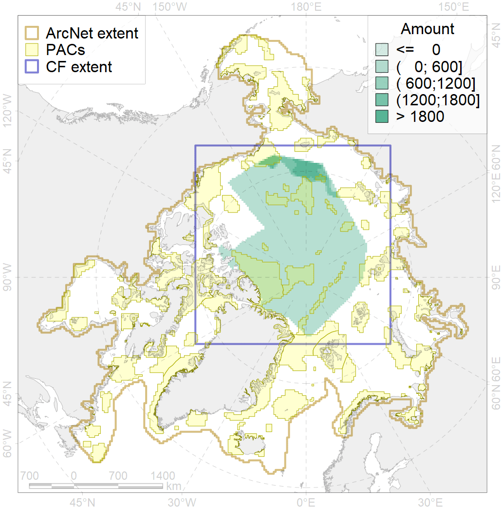
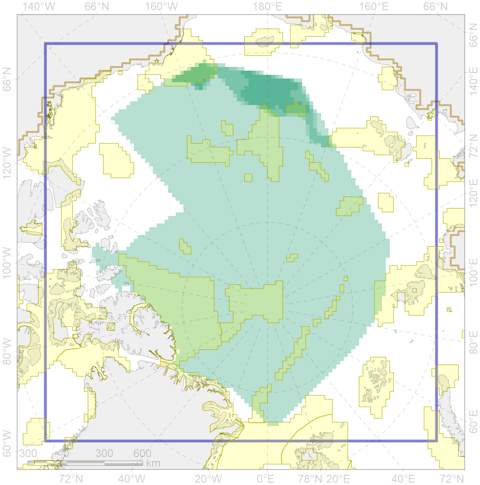

9001

| CF code | 9001 |
| CF name | polar bear of the AB (Arctic Basin) subpopulation distribution |
| Time Period | 1958-2017 |
| Source(s) | Belikov, 2011; Smith et al., 2017; Polar bear critical habitat USFWS, 2010; Platonov, 2018 |
| Seasonality | Jan-Dec |
| Depth Horizon | 0 |
| Methodology | Field data, expert opinion, simulation results. |
| Use Restrictions | No use restriction for the project |
| Author Name | Evgeniya Melikhova, Stanislav Belikov |
| Notes | |
| Scenario’s Target | 0.264 |
| Target Achievement | 0.265 (Scenario: 100.5%) |
| PAC | Share of the Total Amount within the PAC | Share of the Target Achievement for the ArcNet | PAC’s Contribution to the Target Achievement |
|---|---|---|---|
| 11 | 0.3% | 0.7% | 0.7% |
| 14 | 0.2%0.3% | 0.5%0.5% | 0.5%0.5% |
| 28 | 0.3% | 1.0% | 1.0% |
| 29 | 0.0% | 0.0% | 0.0% |
| 33 | 0.0%0.0% | 0.1%0.2% | 0.1%0.1% |
| 54 | 6.7%6.7% | 25.1%25.3% | 25.0%25.2% |
| 55 | 0.3%0.4% | 0.9%1.0% | 0.9%1.0% |
| 56 | 0.1%0.1% | 0.1%0.2% | 0.1%0.2% |
| 57 | 6.1%7.5% | 13.7%15.2% | 13.7%15.1% |
| 58 | 0.0% | 0.1% | 0.1% |
| 60 | 12.3%12.3% | 44.8%44.8% | 44.6%44.6% |
| 82 | 0.1%0.2% | 0.3%0.3% | 0.2%0.3% |
| inner | 26.4%28.0% | 87.3%89.2% | 86.9%88.8% |
| outer | 73.6%75.3% | 13.1%16.2% | 13.1%16.2% |
| † supplement values are for area consistence whereas principal values are for Accenter compatible gridded stats |